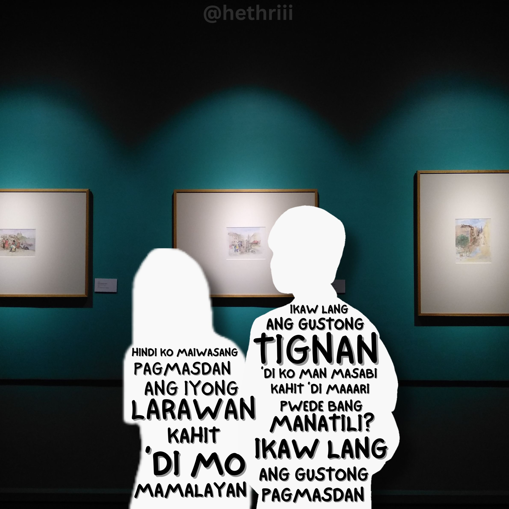
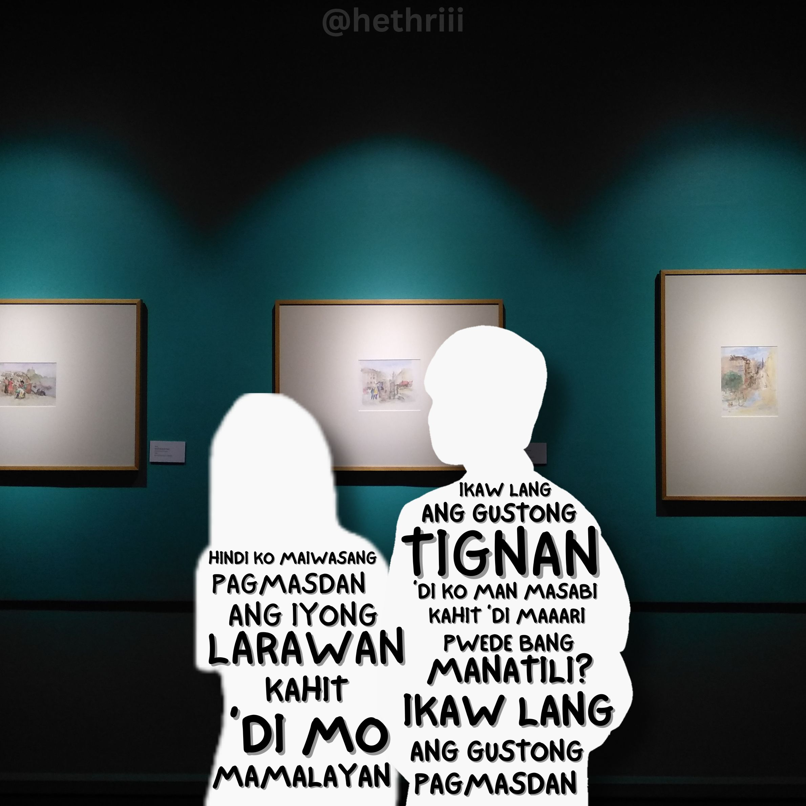

Hi, I'm Adrian
I'm
I'm a passionate graphic designer who loves turning ideas into visually engaging stories. I blend creativity and attention to detail to create designs that not only look great but connect with people. From branding to digital illustration, my work is all about making concepts come alive and resonate with audiences. I’m committed to thoughtful, impactful design that makes a difference.

 
